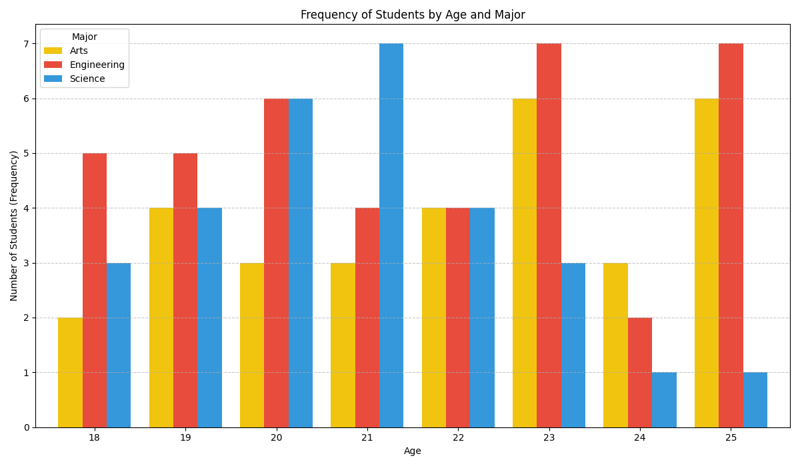

Homework 2
Explain the concept of dataset and distribution
The Concept of a Dataset
A dataset is defined as a structured collection of data. This collection is treated as a single unit by a computer system or analytic process. Datasets are typically organized in a tabular format, such as a database table or a spreadsheet.
In this structure:
- Rows: Each row corresponds to a single observation or member of the set (e.g., one specific student, one transaction).
- Columns: Each column represents a particular variable or attribute, which is a specific characteristic measured for each observation (e.g., 'Age', 'Price', 'Temperature').
A dataset is characterized by its specific topic and the scope of the data it contains.
The Concept of a Distribution
A data distribution is a fundamental concept in statistics that describes the arrangement and frequency of values for a variable. It summarizes how often each possible value (or range of values) in a dataset occurs.
Distributions are commonly visualized using tools like histograms for numerical data or bar charts for categorical data. These visualizations allow for the immediate identification of patterns, trends, and anomalies within the data.
Create a simple dataset and compute the K univariate distribution (K<=3)
In this assignment, I created a simple dataset and computed its K=3 univariate distributions.
The process involved data generation using Python and SQLite, data querying using SQL,
and visualization using Python's matplotlib library.
Dataset Generation
First, I generated a sample dataset representing 100 fictional students (some of them in the image below). This data was stored in an SQLite database file.
I defined three features (K=3) for this dataset:
- Age: A numerical value between 18 and 25.
- Grade: A numerical, discrete value between 1 and 10.
- Major: A categorical value from 'Science', 'Arts', or 'Engineering'.
Used a Python script using the sqlite3
library to interface with the database and the random library to
populate the table with 100 random entries.
Computing Distributions with SQL
To compute the distributions, I queried the database to aggregate the data.
Distribution 1: Age
I executed the following query to count students of each age:
SELECT age, COUNT(*) as frequency FROM Students GROUP BY age ORDER BY age;Distribution 2: Grade (Numerical, Discrete)
Similarly, I queried the frequency for each specific grade:
SELECT grade, COUNT(*) as frequency FROM Students GROUP BY grade ORDER BY grade;Distribution 3: Major (Categorical)
Finally, I queried the counts for the categorical 'Major' feature:
SELECT major, COUNT(*) as frequency FROM Students GROUP BY major;With the small dataset of assignment 2, compute bivariate distribution.
Bivariate distribution on 'Age' and 'Major'.
This visualization allows for direct comparison.
Take a text and compute the distribution of the letters. Then apply a Ceaser Cipher, and decode (using the "Language distribution") the encryption text assuming that you don't know the shift.
I implemented the Caesar Cipher, a simple substitution cipher where each letter is shifted by a fixed number of positions down the alphabet.
I have used a "Decoder" function. This function assumes the shift key is unknown. It works by iterating through all 26 possible shifts and, for each one, calculating the letter distribution of the "decrypted" text. The shift that produces a distribution *closest* to the standard is identified as the most likely key.
Interactive Demonstration
Original Text Distribution
Ciphered Text Distribution
Decoder Result
Found Shift Key: --